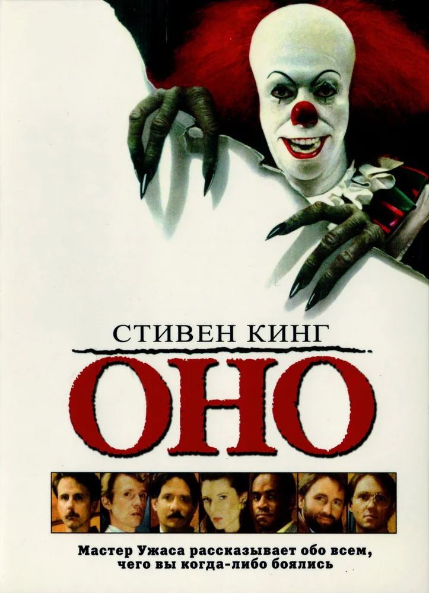
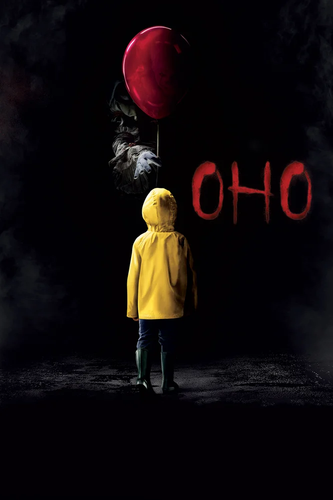
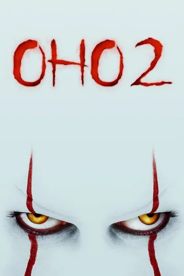

Cost 10$
Author Stephen King
Written in 1986
It was his 22nd book, and his 17th novel written under his own name. The story follows the experiences of seven children as they are terrorized by an evil entity that exploits the fears of its victims to disguise itself while hunting its prey. "It" primarily appears in the form of Pennywise the Dancing Clown to attract its preferred prey of young children.The novel is told through narratives alternating between two periods and is largely told in the third-person omniscient mode. It deals with themes that eventually became King staples: the power of memory, childhood trauma and its recurrent echoes in adulthood and overcoming evil through mutual trust and sacrifice. King has stated that he first conceived the story in 1978, and began writing it in 1981. He finished writing the book in 1985. He also stated that he originally wanted the title character to be a troll like the one in the children s story Three Billy Goats Gruff, but who inhabited the local sewer system rather than just the area beneath one bridge. He also wanted the story to interweave the stories of children and the adults they later become.
| Name | Film adaptation |
|---|---|
| It(1990) |  |
| It(2017) |  |
| It(2019) |  |